21. Transient Landcover Change¶
CLM includes a treatment of mass and energy fluxes associated with prescribed temporal change in land cover. Using an annual time series of the spatial distribution of PFTs and wood harvest, CLM diagnoses the change in area for PFTs at each model time step and then performs mass and energy balance accounting necessary to represent the expansion and contraction of PFT area. This implementation currently only pertains to the case where all PFTs for a particular grid cell coexist on a single soil/snow column. In this case, the only biogeophysical state variable affected is canopy water (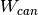 ). The biogeochemical impacts of land use and land cover change are simulated through changes in CLM carbon pools and fluxes as shown in Figure 21.1 and described further in Chapter 13. Other implementations are possible, such as changing the area of soil/snow columns or land unit area, however these require additional consideration of conservation of mass and energy among the soil/snow columns and land units which will be implemented in future versions of CLM.
21.1. Annual Transient Land Cover Data and Time Interpolation¶
The changes in area over time associated with individual PFTs are prescribed through a forcing dataset, referred to here as the dynpft dataset. The dynpft dataset consists of an annual time series of global grids, where each annual time slice describes the fractional area occupied by all PFTs and the annual wood harvest within each grid cell. Changes in area and wood harvest for each PFT within a grid cell at each model time step are inferred from a time-interpolation of the area information for the PFT from the two bracketing annual time slices in the dynpft dataset.
As a special case, when the time dimension of the dynpft dataset starts at a later year than the current model time step, the first time slice from the dynpft dataset is used to represent the current time step PFT fractional area distributions. Similarly, when the time dimension of the dynpft dataset stops at an earlier year than the current model time step, the last time slice of the dynpft dataset is used. Thus, the simulation will have invariant representations of PFT distributions through time for the periods prior to and following the time duration of the dynpft dataset, with transient PFT distributions during the period covered by the dynpft dataset.
The following equations capture this logic, where  is
the calendar year for the current timestep,
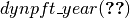 and
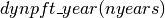are the first and last calendar years in
the dynpft dataset, respectively,
is
the calendar year for the current timestep,
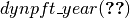 and
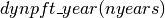are the first and last calendar years in
the dynpft dataset, respectively,  is the number of
years in the dynpft dataset,
is the number of
years in the dynpft dataset,  and
and 
 are the two bracketing years used in the interpolation
algorithm, and
are the two bracketing years used in the interpolation
algorithm, and  is the index value for the
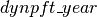 array corresponding to
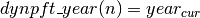 :
is the index value for the
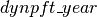 array corresponding to
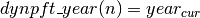 :
(1)¶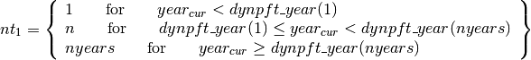
(2)¶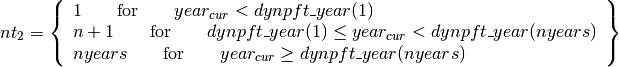
Interpolation of PFT weights between annual time slices in the dynpft
dataset uses a simple linear algorithm, based on the conversion of the
current time step information into a floating-point value for the number
of calendar days since January 1 of the current model year
( ). The interpolation weight for the current time step
). The interpolation weight for the current time step
 is
is
(3)¶
where the numerator is 366 instead of 365 because the time manager
function for CLM returns a value of  for midnight
Greenwich mean time on January 1. With weights
for midnight
Greenwich mean time on January 1. With weights  and
and  obtained from the dynpft dataset for PFT
p at the bracketing annual time slices
and , the interpolated
PFT weight for the current time step (
obtained from the dynpft dataset for PFT
p at the bracketing annual time slices
and , the interpolated
PFT weight for the current time step ( ) is
) is
(4)¶![w_{p,t} =tw_{cday} \left[w_{p} \left(nt_{1} \right)-w_{p} \left(nt_{2} \right)\right]+w_{p} \left(nt_{2} \right)](../../_images/math/ff3245f71fde01863af403cdaf7e9156d4cd75f4.png)
The form of this equation is designed to improve roundoff accuracy
performance, and guarantees stays in the range [0,1].
Note that values for , ,
and are fractional weights at the
column level of the subgrid hierarchy.
The change in weight for a PFT between the current and previous time
steps ( ) is
) is
(5)¶
where n denotes the current time step. The area of a given PFT
increases for  and decreases for
and decreases for
 .
.
21.2. Mass and Energy Conservation¶
Mass conservation is maintained across a PFT weight transition by
summing up all the water state variables to get the total vegetated land
unit water content before ( ) and after
(
) and after
( ) new PFT weights are calculated. For example,
is
) new PFT weights are calculated. For example,
is
(6)¶
where  is the aquifer water,
is the aquifer water,  is the snow
water,
is the snow
water,  and
and  are the liquid and ice
soil water contents,
are the liquid and ice
soil water contents,  is the canopy water content for
PFT
is the canopy water content for
PFT  , and
, and  is the PFT weight for PFT
. For the situation where only PFT weights are changing and all
other land unit fractions are constant, any difference between
and can only be due to
differences in the total canopy water before and after the PFT weight
change. To ensure water conservation, the typically very small
difference between and is
subtracted from the grid cell runoff
is the PFT weight for PFT
. For the situation where only PFT weights are changing and all
other land unit fractions are constant, any difference between
and can only be due to
differences in the total canopy water before and after the PFT weight
change. To ensure water conservation, the typically very small
difference between and is
subtracted from the grid cell runoff
(7)¶
Total energy is unperturbed in this case and therefore an energy conservation treatment is not required. As noted above, other implementations are possible and will be desirable in the future, such as changing the area of soil/snow columns or land unit area, for example in a situation in which crops are implemented on a separate soil column. These would require additional consideration of conservation of mass and energy among the soil/snow columns and land units.
21.3. Annual Transient Land Cover Dataset Development¶
This section describes the development of the dynpft dataset. Development of this dataset requires adapting for use with the CLM a harmonized dataset of land cover change for the historical period and for different representations of the scenario period.
21.3.1. 21.3.1 UNH Transient Land Use and Land Cover Change Dataset¶
To coordinate the processing and consistency of land use and land cover change data between the historical period (1850-2005) and the four IPCC representative concentration pathways (RCPs) derived from integrated assessment models (IAM), the University of New Hampshire (stocktickerUNH) research group (Louise Chini, George Hurtt, Steve Frolking; luh.unh.edu) produced a harmonized transient dataset for use in climate change simulations. The historical component of the transient land use and land cover change dataset is Version 1 of the Land-Use History A product (LUHa.v1) covering the period 1850-2005. The RCP transient land use and land cover change components (2005-2100) are referred to as the Future Land-Use Harmonization A products. Version 1 (LUHa.v1_future.v1) is used for the AIM, MESSAGE, and MiniCAM IAMs; Version 1.1 (LUHa.v1_future.v1.1) is used for the IMAGE IAM. The land cover information is provided at 0.5 degree grid resolution and includes fractional grid cell coverage by crops, pasture, and primary and secondary natural vegetation.
The crop fraction of the grid cell represents the area of the grid cell used to grow any type of crop. Similarly, pasture represents the fraction of a grid cell used for grazing livestock. The remaining area in a half degree grid cell is partitioned into primary and secondary vegetation. Primary vegetation represents the fractional area of a grid cell with vegetation undisturbed by human activities. Secondary vegetation represents vegetated areas that have recovered from some human disturbance; this could include re-vegetation of pasture and crop areas as well as primary vegetation areas that have been logged.
The stocktickerUNH dataset provides a transition matrix that describes the annual fraction of land that is transformed from one category to another (e.g. primary land to crop, pasture to crop, etc.; Hurtt et al. 2006). Included in these transitions is the conversion of secondary land to secondary land, representing the logging on land recovering from an earlier disturbance. These transitions provide information on all changes in land cover through the sum of all transitions in a given year. Harmonized prescriptions of CMIP5 wood harvest statistics also are provided by (Hurtt et al. 2011) for the historical and RCP time series. The wood harvest is prescribed spatially on the same 0.5 degree grid as the land use class transitions for each year.
To ensure consistency with the various land use classes wood harvest is prescribed as both the area of land harvested and the amount of carbon extracted in the grid cell for a particular year. To account for the differences in standing amount of wood carbon as well as the differences in harvest intensity associated with the different land units, the harvest area and carbon amounts are prescribed for the five classes of: PlaceNamePrimary PlaceTypeForest, PlaceNamePrimary PlaceTypeNon-Forest, PlaceNameSecondary PlaceNameMature PlaceTypeForest, PlaceNameSecondary PlaceNameYoung PlaceTypeForest, and PlaceNameplaceSecondary PlaceTypeNon-Forest.
21.3.2. 21.3.2 Representing Land Use and Land Cover Change in CLM¶
CLM represents the land surface as a hierarchy of sub-grid types: glacier; lake; wetland; urban; and vegetated land. The vegetated land is further divided into a mosaic of PFTs. To represent the UNH transient land use and land cover change dataset in CLM, the annual fractional composition of crop, pasture, primary vegetation, and secondary vegetation land units specified in the UNH dataset needs to be faithfully represented with a corresponding PFT mosaic in CLM using the methods described in Lawrence et al (2012). This method translated each of the UNH land units into fractional PFT values based on current day and potential vegetation CLM land surface parameters for that grid cell and for that year, as shown in Figure 21.2.
The methodology for creating the transient PFT dataset is based on four steps which are applied across the time series. First, crop PFT composition is directly specified from the crop land unit fractional area. Second, pasture PFTs are assigned based on grass PFTs found in the potential vegetation and current day CLM land surface parameters scaled by the area of pasture. Third, potential vegetation PFTs are assigned to the grid cell scaled by the fractional area of the primary land unit. Last, current day non-crop and non-pasture PFTs are assigned to the grid cell scaled by the fractional area of the secondary land unit. The annual tree harvest values also are calculated from the harvest information of the UNH dataset used in conjunction with transient tree PFT values. Separate datasets representing the extent of water, wetland, ice and urban land cover are used to compile the final land cover present in each CLM grid cell. These additional non-vegetated land cover fractions are held constant throughout the time series. All datasets are resolved at the half degree grid resolution.
21.3.3. 21.3.3 Present Day PFT Dataset¶
The present day dataset is based on the methodology of Lawrence and Chase (2007) and uses a variety of satellite products to develop present day PFT distributions with matching leaf area index values. The dataset initially derives fractions of bare ground and tree cover from the Moderate Resolution Imaging Spectroradiometer (MODIS) vegetation continuous fields product (Hansen et al. 2003). To further distinguish tree types, the tree fraction is divided into broadleaf/needleleaf and evergreen/deciduous types based on the Advanced Very High Resolution Radiometer (AVHRR) continuous fields tree cover (DeFries et al. 2000). The remaining grid cell area is assumed to be herbaceous grasses and shrubs, including crops. The area of crop is initially determined from Ramankutty et al. (2008) circa 2000 global crop land areas, and the remaining grass and shrub fractions are derived from the MODIS land cover (Friedl et al. 2002). Further subdivisions of grass, shrub and tree PFTs into tropical, temperate and boreal types were based on the physiology and climate rules from Nemani and Running (1996), and for C3/C4 photosynthetic pathways based on MODIS derived leaf area index values and the mapping methods of Still et al. (2003). In contrast to Lawrence and Chase (2007), the understory grasses of forested areas have been replaced with trees for the dataset. Some advantages of this dataset are that it reproduces the physical properties as observed by the MODIS land surface data (e.g. grid cell albedo and leaf area index values) while maintaining the multiple PFT representation.
21.3.4. 21.3.4 Potential PFT Distribution¶
Essential to any reconstruction of past vegetation distributions is the need to know the potential vegetation that would be there prior to human activities. Many researchers have worked to estimate potential vegetation types at regional and global scales from remnant vegetation and other field data or from bioclimatic models. The CLM potential PFT distribution is derived from Ramankutty et al. (2008) at 5 arc-minute resolution. However, this product is based on a biome type classification system that is not directly compatible with the CLM PFT distributions.
The CLM potential vegetation is described by Lawrence and Chase (2010). This reconstruction describes potential PFT distributions extrapolated from the current day PFT composition of remnant natural biomes as mapped by Ramankutty et al. (2008). The current day remnant natural PFT parameters were taken from the Lawrence and Chase (2007) dataset with the same forest understory changes as described above to ensure consistency between the two datasets. The current day remnant natural PFT biome compositions were spatially extrapolated to the potential vegetation biome distributions provided by Ramankutty et al. (2008) using inverse distance weighted methods. The resulting product is a CLM PFT distribution that may have existed prior to human disturbance under current day climate conditions.
21.3.5. 21.3.5 Transient Land Cover Change Dataset¶
For each year from 1850 to 2005 and to 2100 for each of the four RCPs, PFT distributions and wood harvest are adjusted based on the stocktickerUNH dataset. Initially the grid cell is checked to adjust the crop area based on the stocktickerUNH crop area. If the crop area exceeds the available land area (i.e. the grid cell area minus the area assigned to glacier, wetlands, lake and urban areas) then all the available area is allocated to crops and no other PFTs are added. After the crop area is assigned, any remaining area is considered available for pasture.
As the pasture data from the stocktickerUNH dataset represents grazing, pasture areas are assigned in the present day based on the availability of grasses (C3, C4 and boreal C3 PFTs) and shrubs relative to the bare soil fraction. If the grazing area exceeds the total vegetated area from both the potential and current day PFT data, then the grazed area is limited to the larger of the potential or current day vegetated area. This is done to prevent representing sparsely vegetated grazing areas as 100% vegetated pastures. Once the grazing area is less than or equal to the total vegetated area, then grazing areas are assigned to the C3 and C4 grass areas based on their potential vegetation and current day fractions. In areas where the grazing area cannot be met through the current day or potential vegetation grass fraction alone, the current day tree PFTs are converted to grass PFTs, with the remaining shrub PFTs included as being grazed.
Once crop and pasture areas are assigned to a grid cell, the remaining area is assigned to primary and secondary natural vegetation. Primary vegetation is assumed to be undisturbed and reflects the potential vegetation PFT distributions. In the secondary region, the PFT distributions are based on the current day non-crop and non-pasture PFTs in the grid cell. This process ensures that the PFT distributions are kept consistent with the original current day and potential vegetation CLM parameters, while remaining faithful to the stocktickerUNH assigned areas.
21.3.6. Forest Harvest Dataset Changes¶
Discussions following the initial analysis of CCSM4 land cover change experiments found there were very high wood harvest areas compared to wood harvest carbon in the RCP 6.0 and RCP 8.5 time series. The high wood harvest areas were traced to using gridded spatially explicit wood harvest targets from the MESSAGE and AIM groups for these two time series, rather than using regional targets with spatial downscaling in GLM as done with the other three time periods. As a result of these discussions new amended wood harvest targets were generated with regional targets through GLM for the RCP 6.0 and RCP 8.5 time series as described in Lawrence et al. (2012).
Figure 21.1. Schematic of land cover change impacts on CLM carbon pools and fluxes.

Figure 21.2. Schematic of translation of annual UNH land units to CLM4 plant functional types.